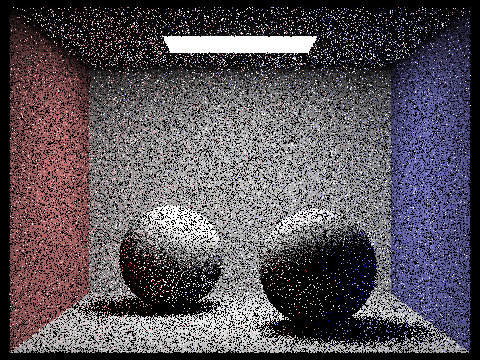
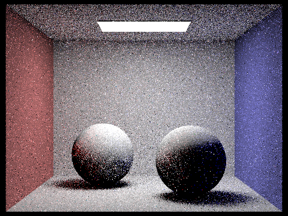

Overview
This project covers ray tracing. First, we consider how to generate rays and cast them to produce images. Then, we explore how rays intersect with triangles and spheres. While after completing this, we get image renders, they take long to generate and do not look very realistic. To solve this, we implement a bounding volume hierarchy to speed up by reducing the number of unnecessary intersections. Then, we explore implementation of direct and indirect lighting to create more realistic images by tracing rays from the light source and from the camera. Having more samples per pixel makes images more high quality, but this comes with a cost of longer render times. Finally, we implemented adaptive sampling to reduce the number of samples per pixel for areas that converge quickly.
Part 1: Ray Generation and Scene Intersection (20 Points)
Walk through the ray generation and primitive intersection parts of the rendering pipeline.
The ray generation part is important because it determines the direction of the rays that will be used in the final render of an image.
The `generate_ray()` function takes in the pixel coordinates and the camera parameters, and it returns a ray that is cast from the camera.
Then, based on the fields of view, it computes the direction of the ray in such a way that x is now double x1 = tan(0.5 * hFov * PI / 180) * (2 * x - 1) and y is double y1 = tan(0.5 * vFov * PI / 180) * (1 - 2 * y).
Building on that, the `raytrace_pixel()` function takes in the pixel coordinates and calls `generate_ray()` to get the ray for each of them.
Then, the color is computed based on the output of `est_radiance_global_illumination()`, which is implemented in later parts.
Explain the triangle intersection algorithm you implemented in your own words.
In my implementation of this part, I used the Moller-Trumbore algorithm. It works by determining if the ray intersects with the triangle, and then it checks whether the intersection point lies within the bounds of the triangle by computing the barycentric coordinates of the intersection point. I used the formula from the (lecture slides) for this part.
Show images with normal shading for a few small .dae files.
|
|

|

|

|
Part 2: Bounding Volume Hierarchy (20 Points)
Walk through your BVH construction algorithm. Explain the heuristic you chose for picking the splitting point.
We are incorporating BVH in our project to speed up the rendering of complex figures. The BVH is constructed recursively - the root node is the bounding box that contains all the triangles in the scene, and then the triangles are split into two groups based on the longest axis of the bounding box. At first, the function computes the bounding box of all the primitives in the input range from start to end, and then, if the number of the primitives is less than the maximum leaf size, then it returns that leaf node. Otherwise, it proceeds to split the primitives along the largest axis. The splitting point is found using centroids that are sorted in an array. We recursively call the function on the left and right sides of the split to cover all the primitives.
Show images with normal shading for a few large .dae files that you can only render with BVH acceleration.
|
|
|
|
|
|
Compare rendering times on a few scenes with moderately complex geometries with and without BVH acceleration. Present your results in a one-paragraph analysis.
Even though the rendered images are identical with and without BVH implementation, BVH significantly speeds up the rendering process. For images above:
cow.dae: 18.2556s (no BVH) vs 4.3471s (with BVH)maxplanck.dae: 163.13s (no BVH) vs 5.4346s (with BVH)CBlucy.dae: 591.7195s (no BVH) vs 4.2834s (with BVH)This works because BVH allows us to skip the intersection tests for the triangles that are not in the same bounding box as the ray.
Part 3: Direct Illumination (20 Points)
Walk through both implementations of the direct lighting function.
In this part, I had to implement two different functions for direct lighting: uniform sphere sampling and importance light sampling.
Uniform Sphere Sampling: in this function, we loop through the number of samples, sample them uniformly on the sphere, and then
check if the are any intersections between the ray and the sampling point.
If there is an intersection, then we add the contribution of the light to the color of the pixel. That contribution is computer by
Monte Carlo estimator: L_out += emission * isect.bsdf->f(w_out, w_in) * cos / (PI);, where hit_p is the hit point of the ray,
w_out and w_in are the incoming and outcoming rays, and cos is the cosine of the angle between the normal and the incoming ray.
Light Sampling: similar to the previous function, we loop through the number of samples, but instead of sampling uniformly on the sphere,
we sample uniformly on the light. Then, we check if there is an intersection between the ray and the sampling point. If there is an intersection,
then we add the contribution of the light to the color of the pixel. That contribution is computer by Monte Carlo estimator:
Show some images rendered with both implementations of the direct lighting function.
All of the images below were rendered with the following parameters: ./pathtracer -t 8 -s 32 -l 8 -m 6 -H -f filename.png -r 480 360 ../dae/sky/filename.dae
| Uniform Hemisphere Sampling | Light Sampling |
|---|---|
.png)
|
.png)
|
.png)
|
.png)
|
Focus on one particular scene with at least one area light and compare the noise levels in soft shadows when rendering with 1, 4, 16, and 64 light rays (the -l flag) and with 1 sample per pixel (the -s flag) using light sampling, not uniform hemisphere sampling.
|
|
|
|
|
|
Here in the above images, even with importance sampling implemented, we can see that there are pretty significant noise levels when the number of samples per pixel is very low (here, -s 1). When overlaying the images on top of each other, we can see that the noise slightly reduces as we increase the number of light rays, and especially in the ceiling area.
Compare the results between uniform hemisphere sampling and lighting sampling in a one-paragraph analysis.
Comparing the uniform hemisphere sampling and lighting sampling, we can say that the lighting sampling is much better visually because of the smoother image.
This happpens because the lighting sampling samples the light directly, so it has a more accurate representation. Whereas the uniform hemisphere sampling samples the light indirectly.
Part 4: Global Illumination (20 Points)
Walk through your implementation of the indirect lighting function.
This task is centered around the indirect light sampling and global illumination, and the bulk of the Task is inside the PathTracer::at_least_one_bounce_radiance function.
At a high level, we want to understand the next location of the ray, and then we want to sample the light at that location (which leads to a recursive nature of the function).
`max_ray_depth` parameter sets a limit on how many times we can recurse, and Russian Roulette is used to terminate the recursion early (based on the termination probability parameter which is set to 0.3 in my case).
Show some images rendered with global (direct and indirect) illumination. Use 1024 samples per pixel.
These images were generated by using these settings:
./pathtracer -t 16 -s 1024 -l 4 -m 3 -f filename.png -r 480 360 ../dae/sky/filename.dae.
|
|
|
Pick one scene and compare rendered views first with only direct illumination, then only indirect illumination. Use 1024 samples per pixel. (You will have to edit PathTracer::at_least_one_bounce_radiance(...) in your code to generate these views.)

|

|
Here, we can see that with only direct illumination, we are basically running zero_bounce_radiance and one_bounce_radiance, so the ceiling is not lit up. With only indirect illumination, we are running at_least_one_bounce_radiance, so the ceiling is lit up, and the overall image is brighter because we have more rays bouncing around.
For CBbunny.dae, compare rendered views with max_ray_depth set to 0, 1, 2, 3, and 100 (the -m flag). Use 1024 samples per pixel.
|
|
|
|
|

|
|
|
All of these images were rendered with 1024 rays per pixel and 4 samples per area light. Maximum number of ray depth varied from 0 to 100. Here, we can see that the very first scenario where m = 0, is actually equaivalent to zero_bounce_radiance, so we can only see the lights on the ceiling. Scenario when m = 1 corresponds to displaying only direct illumination, similar to the part above. As we increase the value of m, we can see that the indirect illumination is added to the scene, but there is not much difference between m = 3 and m = 100, for example.
Pick one scene and compare rendered views with various sample-per-pixel rates, including at least 1, 2, 4, 8, 16, 64, and 1024. Use 4 light rays.
|

|
|
|
|
|
|

|
|
We can generally see that increasing the number of samples per pixel makes some positive impact in the image quality. Here, sample rate of 64 yields significantly better quality image compared to 1 sample per pixel. However, the rendering speed decreases as we add more samples.
Part 5: Adaptive Sampling (20 Points)
Explain adaptive sampling. Walk through your implementation of the adaptive sampling.
Adaptive sampling optimizes the sampling process by increasing sampling of the pixels that take long to converge.
As we loop through the pixels, we first compute the mean and standard deviation of the pixel. Then, we check
if the pixel has converged or not by seeing if the standard deviation is less than the threshold. If it has not converged,
we continue the sampling. In the end, we save the number of samples for each pixel in a buffer.
We define I = 1.96 * σ / sqrt(n), and our goal is to check if I ≤ maxTolerance⋅μ. If it is, then the pixel converged and we stop sampling.
In the end, we save the number of samples for each pixel in a buffer.
Pick two scenes and render them with at least 2048 samples per pixel. Show a good sampling rate image with clearly visible differences in sampling rate over various regions and pixels. Include both your sample rate image, which shows your how your adaptive sampling changes depending on which part of the image you are rendering, and your noise-free rendered result. Use 1 sample per light and at least 5 for max ray depth.
The following images have been generated with these settings: ./pathtracer -t 8 -s 2048 -a 64 0.05 -l 1 -m 5 -r 480 360 -f filename.png ../dae/sky/filename.dae
This did not work so well, and I think it has something to do with the fact that my global illumination was noisy in general, and there were too many
shadows on the spheres. For example, the light on the ceiling should have definitely converged very fast, but the color of the light on
the sample rate image is pretty bright.
|
|
|
|
|
|